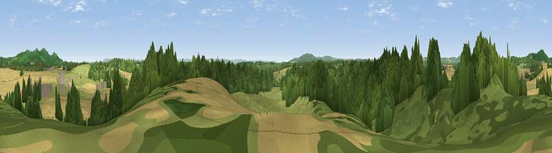

Viewpoint near Bromesberrow Heath
#22519 in England · top 53% of its area beats it · near Bromesberrow Heath · path 201 mWhere it is
The exact computed spot (SO 72975 31375). Click the marker for map links.
Public access: the nearest public right of way is about 201 m away — the final stretch may cross private land. Computed from Natural England's CRoW access layer and OpenStreetMap rights of way — not the legal definitive map. Always verify locally.
The view, rendered

A 360° render of this exact spot computed from the terrain model, tree cover and land cover — summer colours, afternoon light, calibrated against photographs of famous viewpoints. Real trees, hedges and buildings will differ in detail.
The panorama
Grey silhouette: terrain skyline in each direction (720 bearings, Earth curvature and refraction included). Dashed green: skyline with trees (+15 m) and buildings (+8 m) as obstacles. Blue strip: how far the ground is visible on each bearing.
Where the view opens
Wedge length = distance to the farthest visible ground on that bearing (vegetation-aware). Rings at 10, 25 and 50 km.
What fills the view
40% woodland · 36% cropland · 24% grassland ·
Angular shares of the visible panorama (visual magnitude), not map area. Landscape diversity 0.48 (0–1 Shannon).
Key numbers
More beautiful places nearby
The staircase of upgrades: each row has a higher view potential than everything closer. Driving times are estimates from straight-line distance, calibrated against real road routing — check an actual route before setting out.
| Place | Direction | Drive | Score |
|---|---|---|---|
| Viewpoint near Donnington | NNW · 3 km | ~6 min | 58.6 |
| Viewpoint near Redmarley d'Abitot | ENE · 3 km | ~6 min | 67.3 |
| Viewpoint near Eastnor | N · 5 km | ~10 min | 75.3 |
| Chase End Hill | NE · 5 km | ~11 min | 81.5 |
| Ragged Stone Hill | NNE · 6 km | ~13 min | 82.5 |
| Midsummer Hill | NNE · 7 km | ~14 min | 83.0 |
| Millennium Hill | NNE · 9 km | ~17 min | 86.9 |
| Worcestershire Beacon | NNE · 14 km | ~26 min | 87.1 |
51.98017, -2.39489 · source: screening · position refined by local search. Computed location — check access rights before visiting.